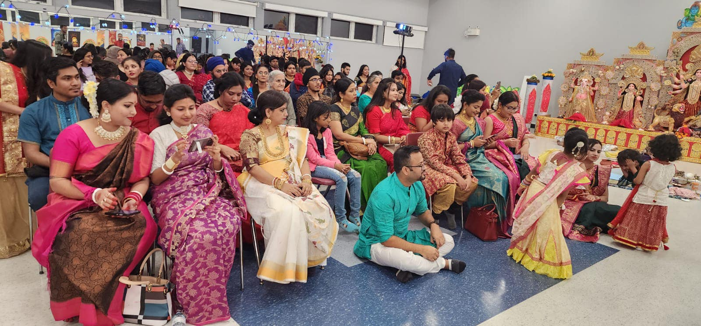
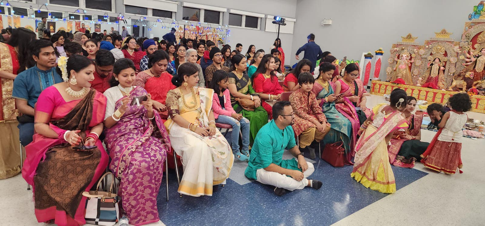

You wouldn’t believe how amazing Durga Puja 2024 was with the Sylhetoba Sanatan Cultural Organization — honestly, it felt like a dream that passed too quickly. The moment the calendar flipped to October, the entire community started buzzing. Everywhere you looked, people were preparing—buying sarees, practicing dances, setting up lights—and I could feel that familiar excitement in the air. You know, the kind that makes your heart beat a little faster because you just know something magical is about to happen.
The celebrations started on October 9th, and from the very first evening, everything felt alive. The pandal was so beautifully decorated this year—I mean, I don’t even know how to explain it. The way Ma Durga’s murti stood, all radiant and fierce with her ten arms holding weapons, but still looking so loving and calm... it felt like she was really watching us, like she was there. Everyone folded their hands and offered prayers, and the air smelled of incense, flowers, and somehow... hope.
Every morning we’d gather early for pushpanjali, wearing our traditional clothes and trying not to sneeze while holding flowers in cupped hands. I remember laughing with my friends because one of them always ended up dropping petals before the priest even started chanting. And the bhog—don’t even get me started. Khichuri, labra, beguni, mishti doi... it was all so delicious. Even the long lines didn’t bother us because we’d be chatting and joking the whole time.
But what really made it special for me were the evenings. Every single night, there were cultural performances. One day we had classical dances that were so graceful I swear I forgot to blink. The next night there were songs that made my mom cry because they reminded her of home. I even got to perform on stage with my friends! We did a small drama based on a story from the Devi Mahatmya, and I was SO nervous—but the applause at the end? Totally worth it.
There was this one evening—Ashtami, I think—when we all sat quietly during the Sandhi Puja. The whole atmosphere changed. The lights were dimmed, the dhak was playing slowly, and the priest lit 108 lamps one by one. I don’t know how to describe it... it just felt sacred. Like time stopped.
We also had this little corner for kids where they could draw, color, and even learn how to make rangoli. My younger cousin was obsessed with the sweets they gave out and would sneak extra when no one was looking. Oh, and the aunties were all dressed up in gorgeous red-and-white sarees on Dashami for Sindoor Khela—it was SO colorful and joyful, but also kind of emotional because it meant Ma Durga was leaving.
I didn’t expect to feel so attached, but when they carried the idol out for visarjan, my throat tightened. People were shouting “Asche Bochor Abar Hobe!” and throwing flowers into the air. It hit me how quickly it all went by. But even though it ended, I know we’re all carrying a little piece of that joy and power inside us now.
SSCA really brought everyone together this year—elders, kids, families, even people who weren’t part of the community but came to watch or eat or just be part of it. It wasn’t just a puja, it was like... home, in the truest sense.
I already can’t wait for next year.